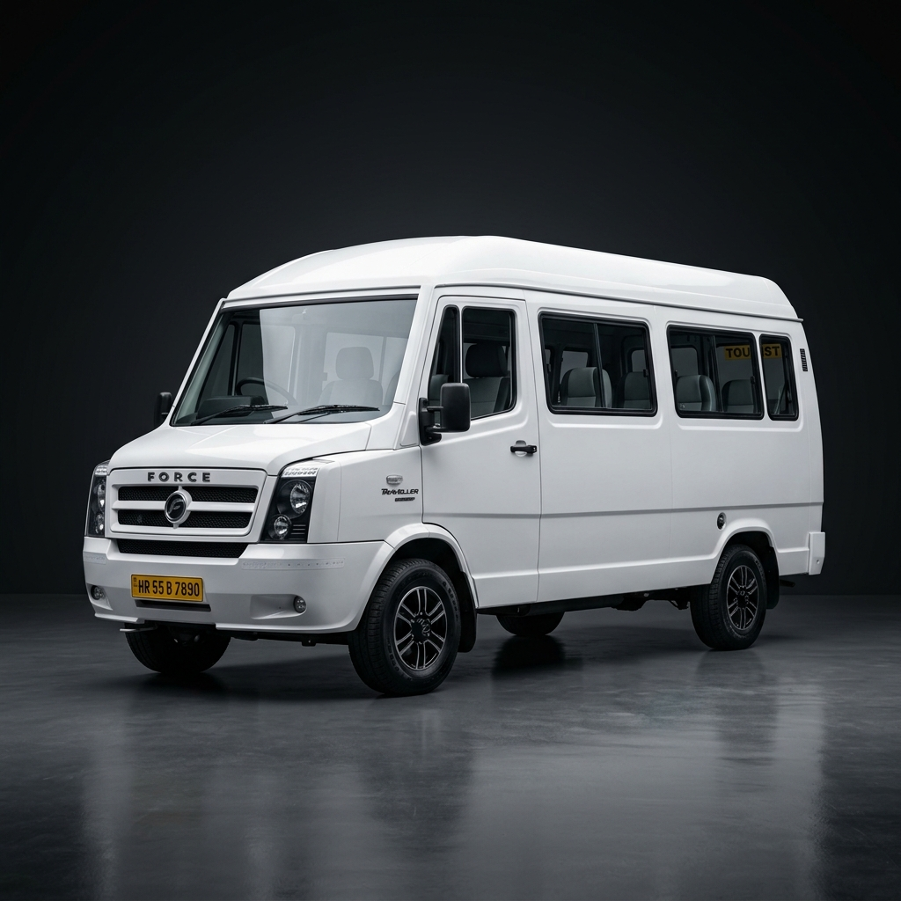

Best Tempo Traveller in Lucknow
Book a tempo traveller in Lucknow with Sagar Tour and Travels for group tours, family pilgrimages, corporate outings, and wedding parties. We offer 12-seater, 17-seater, and 26-seater AC tempo travellers with push-back seats, professional drivers, and transparent pricing. Ideal for trips to Ayodhya, Varanasi, Agra, and Nainital.
12 / 17 / 26
Seater Options
Full AC
All Vehicles
Push-Back
Comfortable Seats
24/7
Availability
Our Tempo Traveller Fleet
Best Seller

Popular Tempo Traveller Routes from Lucknow


Tempo Traveller Lucknow — FAQ
Tempo traveller rates depend on seater capacity, trip type, and distance. Contact us at +916387301763 for exact rates. Minimum outstation booking is 250 km/day.
We offer 12-seater, 17-seater, and 26-seater tempo travellers. All come with AC, push-back seats, music system, first-aid kit, and ample luggage space.
Yes! Lucknow to Ayodhya is our most popular tempo traveller route, especially for Ram Mandir darshan. The 140 km journey takes about 3 hours. All seater options are available.
Yes, all our tempo travellers are fully air-conditioned with push-back seats, a music system, and a first-aid kit for a comfortable journey.
Outstation minimum is 250 km/day. Local minimum is 120 km / 12 hours. Toll, parking, and border tax are always charged at actuals — never included in the quoted rate.
Book Your Tempo Traveller Now
Best rates for group travel in Lucknow. Call or WhatsApp for instant availability.